Diseños Factoriales
Introducción
El objetivo de los diseños experimentales factoriales es analizar los efectos de dos o más factores que son de interés sobre una o más respuestas. Además, otro objetivo particular en los diseños factoriales es determinar una combinación de niveles de los factores en la que el desempeño del proeceso sea mejor.
Los diseños factoriales se dividen en diseños de efectos fijos y diseños de efectos mixtos, en el primer caso se tiene que los factores pueden ser de tipo cuantitativo o cualitativo pero sus niveles deben estar fijos, es decir, que se garantizan las condiciones para que las corridas adquieran el valor determinado por el investigador en los niveles del factor. Para estudiar la manera en que influye cada factor sobre la variable de respuesta es necesario elegir al menos dos niveles de prueba para cada uno de ellos.
En el caso de los diseños de efectos mixtos se tiene una combinación de factores fijos o aleatorios, donde la variable respuesta se ve afectada por la variación entre los factores y la variación dentro de los factores. Por lo general, en los modelos mixtos se considera una fuente de variación adicional dentro de la unidad de medición que se analíza a través de las réplicas.
Cuando se tienen diseños factoriales se construye la matriz de diseño o arreglo factorial a partir de los puntos experimentales o tratamientos que pueden formarse considerando todas las posibles combinaciones de los niveles de los factores. Por ejemplo con \(k=2\) factores, ambos con dos niveles, se forma el diseño factorial \(2\times2=2^2\) que consiste en cuatro combinaciones o puntos experimentales. ahora si se tiene dos factores, uno con 3 niveles y otro con 2 niveles, entonces el arreglo factorial es de la forma \(3\times2\).
Finalmente, las corridas experimentales se calcula con el número de puntos experimentales multiplicado por el número de réplicas considerada en el diseño experimental.
Ejemplo
Se planea realizar un diseño experimental factorial con tres factores, el primero tiene 3 niveles, el segundo tiene dos niveles y el tercero tiene 4 niveles. Además, se presupuesta realizar 4 réplicas por cada punto experimental, entonces el número de corridas es: \[\underset{\text{Factor 1}} 3 \times \underset{\text{Factor 2}} 2 \times\underset{\text{Factor 3}} 4 \times \underset{\text{Réplicas}} 4 = \underset{\text{Corridas}} {96}\]
Análisis de los efectos
Suponga que en un proceso de fabricación de galletas se quiere analizar el efecto de la temperatura de cocción y el tiempo en horno que tiene sobre la cantidad de galletas bien cocidas en diferentes lotes.
El efecto de un factor se define como el cambio observado en la variable de respuesta debido a un cambio de nivel de tal factor En particular, los efectos principales son los cambios en la media de la variable de respuesta que se deben a la acción individual de cada factor.
Efecto principal
En términos matemáticos, el efecto principal de un factor con dos niveles es la diferencia entre la respuesta media observada cuando tal factor estuvo en su primer nivel, y la respuesta media observada cuando el factor estuvo en su segundo nivel.
Si el efecto de un factor A es mayor al efecto de un factor B, entonces en términos absolutos el efecto principal de A es mayor al de B.
Efecto de interacción
Se dice que los factores interactúan entre si o tienen un efecto de interacción sobre la variable respuesta, cuando el efecto de un factor depende del nivel en que se encuentra el otro.
Por ejemplo con las galletas se puede ver los siguiente:

Los datos muestran que el rendimiento de buenas galletas es mejor cuando, o bien la temperatura es elevada y el tiempo en el horno es corto, o la temperatura es baja y el tiempo en el horno es larga. Si las galletas se dejan en el horno durante mucho tiempo a una temperatura elevada, hay galletas quemadas y el rendimiento es bajo.
El efecto combinado que ejercen ambos factores sobre la variable respuesta representan el efecto de interacción dentro del modelo, y su interpretación debe se de sumo cuidado, esto dependerá del efecto causal que tiene uno de los factores en presencia del otro. Es posible que se presenten efectos casuales que donten interacción, pero ¿cómo se define la causalidad o la casualidad?
Ventajas de los diseños factoriales
Permiten estudiar el efecto individual y de interacción de los distintos factores.
Son diseños que se pueden aumentar para formar diseños compuestos en caso de que se requiera una exploración más completa. Por ejemplo, es útil aumentar el diseño si el comportamiento de la respuesta no es lineal en los factores controlados.
Se pueden correr fracciones de diseños factoriales, las cuales son de gran utilidad en las primeras etapas de una investigación que involucra a muchos factores, cuando interesa descartar de manera económica los que no son importantes, antes de hacer un estudio más detallado con los factores que sí son importantes.
Pueden utilizarse en combinación con diseños de bloques en situaciones en las que no puede correrse todo el diseño factorial bajo las mismas condiciones. Por ejemplo, cuando cada lote de material sólo alcanza para correr la mitad del experimento, éste se puede realizar en dos bloques (dos lotes), lo cual implica repartir las pruebas en los dos lotes de la manera más conveniente posible.
La interpretación y el cálculo de los efectos en los experimentos factoriales se puede hacer con aritmética elemental, en particular cuando cada factor se prueba en dos niveles.
Diseños factoriales con dos factores
Considere los factores \(A\) y \(B\) con \(a\) y \(b\) \((a, b \geq 2)\) niveles de prueba, respectivamente. Con ellos se puede construir el arreglo o diseño factorial \(a \times b\) o combinaciones de tratamientos.
Algunos casos particulares de uso frecuente son: el factorial \(2^2\), el factorial \(3^2\) y el factorial \(3 \times 2\). Se llama réplica a cada corrida completa del arreglo factorial. Los diseños factoriales que involucran menos de cuatro factores por lo regular se corren replicados para tener la potencia necesaria en las pruebas estadísticas sobre los efectos de interés. Si se hacen \(n\) réplicas, el número total de corridas experimentales es \(n(a \times b)\).
Consideremos un experimento en el que se quiere estudiar el efecto de los factores A: profundidad de corte sobre el acabado de un metal y B: velocidad de alimentación. Aunque los factores son de naturaleza continua, en este proceso sólo se puede trabajar en 4 y 3 niveles, respectivamente. Por ello, se decide correr un factorial completo \(4 \times 3\) con tres réplicas, que permitirá obtener toda la información relevante en relación al efecto de estos factores sobre el acabado (\(Y\)) el cuál está en unidades de gramos y el interés está en minimizar su valor . Al aleatorizar las 36 pruebas se obtienen los datos de la tabla
| Velocidad | ||||
|---|---|---|---|---|
| 0.20 | 0.25 | 0.30 | ||
| Profundidad | 0.15 | 74 | 92 | 99 |
| 64 | 86 | 98 | ||
| 60 | 88 | 102 | ||
| 0.18 | 79 | 98 | 104 | |
| 68 | 104 | 99 | ||
| 73 | 88 | 95 | ||
| 0.21 | 82 | 99 | 108 | |
| 88 | 108 | 110 | ||
| 92 | 95 | 99 | ||
| 0.24 | 99 | 104 | 114 | |
| 104 | 110 | 111 | ||
| 96 | 99 | 107 | ||
Modelo estadístico e hipótesis
El modelo de efectos fijos para este diseño experimental está dado por:
\[Y_{ijk}=\mu+\alpha_i+\beta_j+(\alpha\beta)_{ij}+\varepsilon_{ijk}\\ i=1,2,\dots,a\quad j=1,2,\dots,b\quad k=1,2,\dots,n\\ \varepsilon_{ijk}~NID(0,\sigma^2)\]
donde \(\mu\) es la media general, \(\alpha_i\) es el efecto debido al i-ésimo nivel del factor A, \(\beta_j\) es el efecto del j-ésimo nivel del factor B, \((\alpha\beta)_{ij}\) representa al efecto de interacción en la combinación \(ij\) y \(\varepsilon_{ijk}\) es el error aleatorio que se supone sigue una distribución normal con media cero y varianza constante \(\sigma^2\) e independientes entre si.
Para este modelo se tiene \(a=4\), \(b=3\) y \(n=3\) réplicas. Las hipótesis de interés para los tres efectos del modelo son:
\[H_0: \text{Efecto de profundidad }(A) = 0\\ H_a: \text{Efecto de profundidad }(A) \neq 0\]
\[H_0: \text{Efecto de velocidad }(B) = 0\\ H_a: \text{Efecto de velocidad }(B) \neq 0\]
\[H_0: \text{Profundidad}\times\text{Velocidad } (AB) = 0\\ H_a: \text{Profundidad}\times\text{Velocidad } (AB) \neq 0\]
Y en términos de los parámetros del modelo, las hipótesis se puede reescribir como:
\[H_0: \alpha_1 = \alpha_2 = \dots = \alpha_a = 0\\ H_a: \alpha_i \neq 0 \quad \text{para algun}\quad i\]
\[H_0: \beta_1 = \beta_2 = \dots = \beta_b = 0\\ H_a: \beta_j \neq 0 \quad \text{para algun}\quad j\]
\[H_0: (\alpha\beta)_{ij} = 0 \quad \text{para todo}\quad ij\\ H_a: (\alpha\beta)_{ij} \neq 0 \quad \text{para algun}\quad ij\]
Las hipótesis se prueban mediante el análisis de varianza (ANOVA), como tenemos un diseño factorial con réplicas de la forma \(a \times b \times n\) entonces es necesario descomponer la variación total.
\[SS_T = SS_A + SS_B + SS_{AB} + SS_E\]
Donde los respectivos grados de libertad son:
\[(nab-1)=(a-1)+(b-1)+(a-1)(b-1)+ab(n-1)\]
El total de observaciones es \(N=nab\). La parte \((n-1)\) en los grados de libertad de la suma de cuadrados del error señala que se necesitan dos o más réplicas para poder estimar el modelo vía ANOVA.
ANOVA
| Fuente de Variación | SS | gl | MS | F | valor-p |
|---|---|---|---|---|---|
| Efecto A | \(SS_A\) | \(a-1\) | \(MS_A=\frac{SS_A}{a-1}\) | \(F_0=\frac{MS_A}{MSE}\) | \(P(F>F_0)\) |
| Efecto B | \(SS_B\) | \(b-1\) | \(MS_B=\frac{SS_B}{b-1}\) | \(F_0=\frac{MS_B}{MSE}\) | \(P(F>F_0)\) |
| Efecto AB | \(SS_{AB}\) | \((a-1)(b-1)\) | \(MS_{AB}=\frac{SS_{AB}}{(a-1)(b-1)}\) | \(F_0=\frac{MS_{AB}}{MSE}\) | \(P(F>F_0)\) |
| Error | \(SS_E\) | \(ab(n-1)\) | \(MSE=\frac{SS_E}{ab(n-1)}\) | ||
| Total | \(SS_T\) | \(abn-1\) |
Donde las sumas de cuadrados están dadas por:
\[SS_T=\sum_{i=1}^a \sum_{j=1}^b \sum_{k=1}^n Y^2_{ijk}-\frac{Y^2_{...}}{N}\]
\[SC_A=\sum_{i=1}^a \frac{Y^2_{i..}}{bn}-\frac{Y^2_{...}}{N}\]
\[SC_B=\sum_{j=1}^b \frac{Y^2_{.j.}}{an}-\frac{Y^2_{...}}{N}\]
\[SC_{AB}=\sum_{i=1}^a \sum_{j=1}^b \frac{Y^2_{ij.}}{n} - \frac{Y^2_{...}}{N}-SS_A-SS_B\]
\[SS_E=SS_T-SS_A-SS_B-SS_{AB}\]
Una vez se construye la tabla de ANOVA se verifican los supuestos del modelos a través de los residuales o errores aleatorios, similar a los diseños de un solo factor, entonces hay que comprobar:
- Normalidad
- Independencia
- Homocesdasticidad
Con los supuestos del modelos validados, se procede a realizar las pruebas post-hoc si se desea inferir sobre los niveles de los tratamientos del modelo. Se pueden utilizar los métodos:
- Comparaciones de diferencia mínima significativa (LSD)
- Método Tukey HSD
- Método Duncan
- Método Dunnet para fijar un nivel como un control
Ejemplo 1
Continuando con el ejmplo del acabado de un metal tenemos el factor Profundidad del corte con los niveles 0.15, 0.18, 0.21 y 0.24, el factor Velocidad con los niveles 0.20, 0.25 y 0.30. El modelo a evaluar es:
\[Y_{ijk}=\mu+\alpha_i+\beta_j+(\alpha\beta)_{ij}+\varepsilon_{ijk}\\ i=1,2,3,4\quad j=1,2,3\quad k=1,2,3\\ \varepsilon_{ijk}~NID(0,\sigma^2)\]
Donde el número de corridas totales es \(N=nab=36\). Utilizando R el análisis estadístico de este diseño experimental es sencillo. Los pasos a seguir son los siguientes:
- Cargar/Construir la base de datos con la información de interés.
- Realizar un análisis descriptivo de la información.
- Ajustar el modelo a través del ANOVA.
- Validar los supuestos del modelo.
- Realizar las pruebas post-hoc.
Necesitamos las siguientes librerías.
# Para gráficos con estilo
require(ggplot2)
# Para manejar bases de datos
require(dplyr)
# Para construir los qq-plots
require(car)
# Para las pruebas de normalidad
require(nortest)
# Para evaluar las interacciones
require(phia)
# Para las pruebas post-hoc
require(agricolae)
require(multcomp)El primer paso es cargar o construir la base de datos, esto puede hacerse en excel y luego importarlas a R o se puede construir la base de datos de la siguiente forma:
datos <- data.frame(acabado=c(74,92,99,
64,86,98,
60,88,102,
79,98,104,
68,104,99,
73,88,95,
82,99,108,
88,108,110,
92,95,99,
99,104,114,
104,110,111,
96,99,107),
profundidad=rep(c("0.15","0.18","0.21","0.24"),each=9),
velocidad=rep(c("0.2","0.25","0.3"),12),
stringsAsFactors = T)
# verificar la tabla de datos
str(datos)## 'data.frame': 36 obs. of 3 variables:
## $ acabado : num 74 92 99 64 86 98 60 88 102 79 ...
## $ profundidad: Factor w/ 4 levels "0.15","0.18",..: 1 1 1 1 1 1 1 1 1 2 ...
## $ velocidad : Factor w/ 3 levels "0.2","0.25","0.3": 1 2 3 1 2 3 1 2 3 1 ...Los análisis descriptivos sirven para evaluar visualmente si existe un posible efecto del tratamiento en la variable respuesta, los candidatos a para esto son los BoxPlot ya que se presentan réplicas, además es necesario evaluar el efecto medio, entonces con gráficos de punto y línea y de interacción se realiza el análisis exploratorio.
# Box plot
ggplot(datos,aes(x=profundidad,y=acabado,fill=profundidad))+
geom_boxplot()+ggtitle("Diagrama de Cajas y Bigotes: Factor A (Profundidad)")+
theme_bw()
ggplot(datos,aes(x=velocidad,y=acabado,fill=velocidad))+
geom_boxplot()+ggtitle("Diagrama de Cajas y Bigotes: Factor B (Velocidad)")+
theme_bw()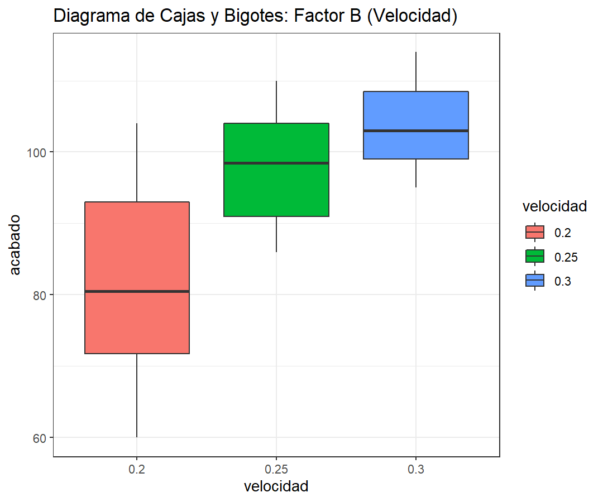
# Interacción con Base
with(datos,
interaction.plot(profundidad,velocidad,acabado,
las=1,type = "b",pch=rep(19,3),col = 1:3,
main="Gráfico de Interacción AB"))
grid()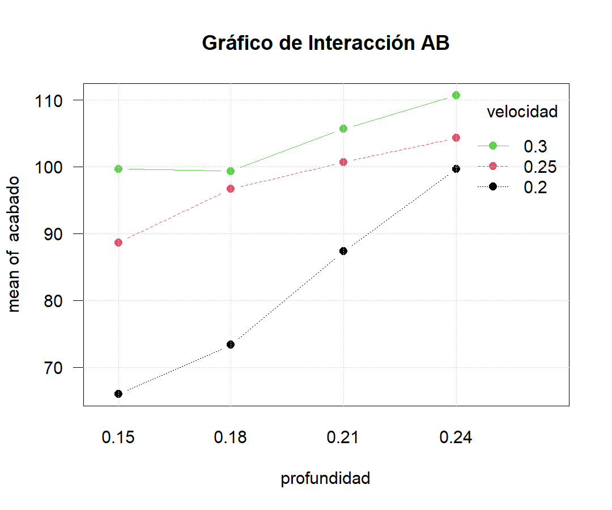
with(datos,
interaction.plot(velocidad,profundidad,acabado,
las=1,type = "b",pch=rep(19,4),col = 1:4,
main="Gráfico de Interacción BA"))
grid()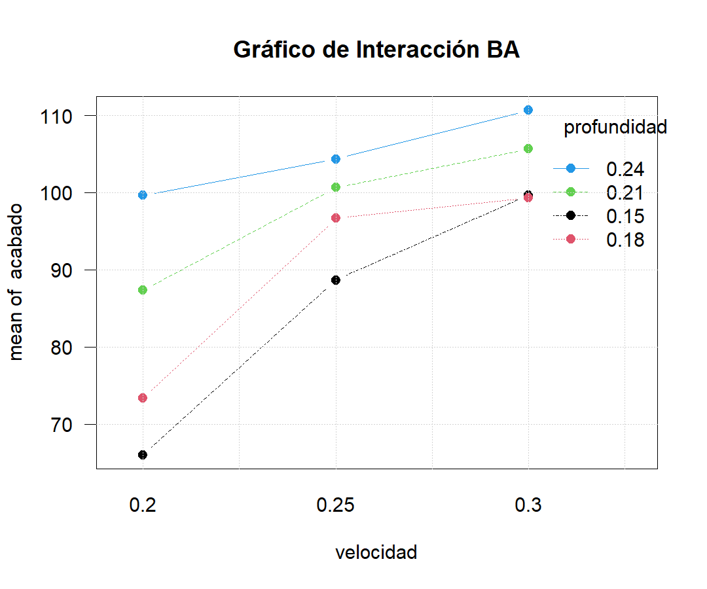
# Interacción con ggplot
Inter <- datos %>% group_by(profundidad,velocidad) %>%
summarise(acabado = mean(acabado))
ggplot(Inter,aes(x=profundidad,y=acabado,
group=velocidad,colour=velocidad))+
geom_point(size=2)+geom_line(lwd=1)+
ggtitle("Gráfico de Interacción AB")+theme_bw()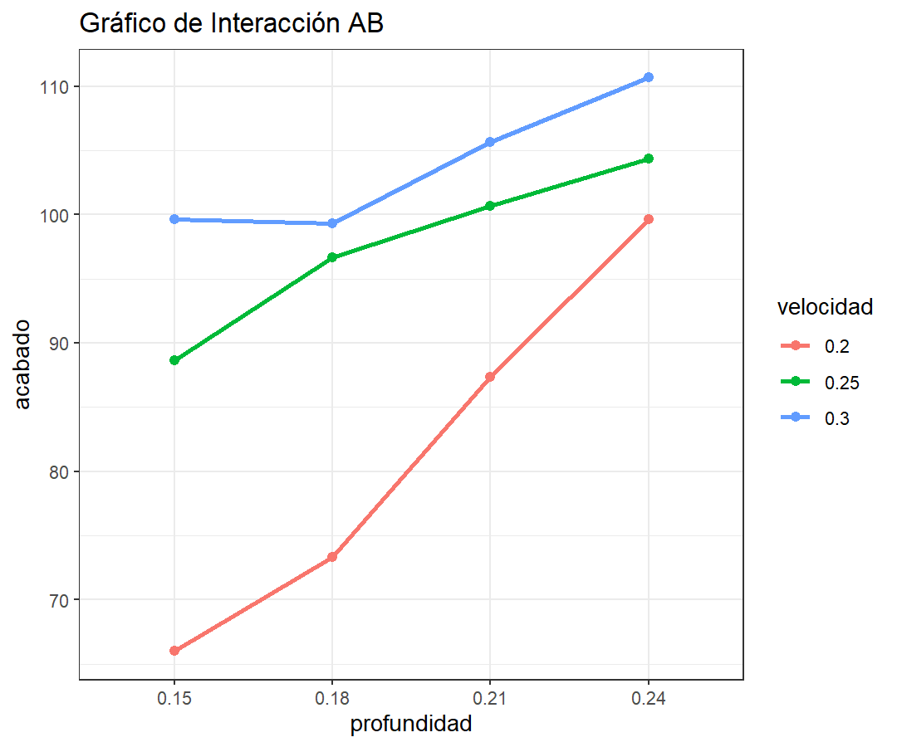
ggplot(Inter,aes(x=velocidad,y=acabado,
group=profundidad,colour=profundidad))+
geom_point(size=2)+geom_line(lwd=1)+
ggtitle("Gráfico de Interacción BA")+theme_bw()
De acuerdo con los gráficos, en ambos factores los niveles altos son los que expresan respuestas más altas en el acabado del metal, por otra parte parece que existe interacción entre la velocidad a 0.30 y la profundidad en los niveles 0.15 y 0.18.
Luego se construye el modelo con el comando aov dando como argumentos la fórmula, después se ejecuta el comando anova para construir la tabla e interpretar.
# Anova
fit <- aov(acabado~profundidad*velocidad,data = datos)
anova(fit)## Analysis of Variance Table
##
## Response: acabado
## Df Sum Sq Mean Sq F value Pr(>F)
## profundidad 3 2125.11 708.37 24.6628 1.652e-07 ***
## velocidad 2 3160.50 1580.25 55.0184 1.086e-09 ***
## profundidad:velocidad 6 557.06 92.84 3.2324 0.01797 *
## Residuals 24 689.33 28.72
## ---
## Signif. codes: 0 '***' 0.001 '**' 0.01 '*' 0.05 '.' 0.1 ' ' 1De acuerdo con el ANOVA los factores de profundidad y velocidad son significativos en el modelo, además se considera la interacción entre los dos factores en el acabado del metal. Es necesario validar los supuestos del modelo antes de realizar las pruebas post-hoc y concluir más allá.
# normalidad
qqPlot(fit$residuals,pch=19,main="Normal Q-Q Plot",las=1)
## [1] 17 1shapiro.test(fit$residuals)##
## Shapiro-Wilk normality test
##
## data: fit$residuals
## W = 0.97051, p-value = 0.4397ad.test(fit$residuals)##
## Anderson-Darling normality test
##
## data: fit$residuals
## A = 0.32588, p-value = 0.5097lillie.test(fit$residuals)##
## Lilliefors (Kolmogorov-Smirnov) normality test
##
## data: fit$residuals
## D = 0.085574, p-value = 0.7251Se cumple el supuesto de normalidad dado que no se rechaza la hipótesis nula. Como no tenemos el orden de las corridas del modelo, no es posible evaluar independencia en los residuales.
# Homocedasticidad
plot(predict(fit),fit$residuals,pch=19,las=1,
main="Homogeneidad de Varianza",
xlab="Valores Predictivos",ylab="Residuales")
abline(h=0,lty=2,col=2)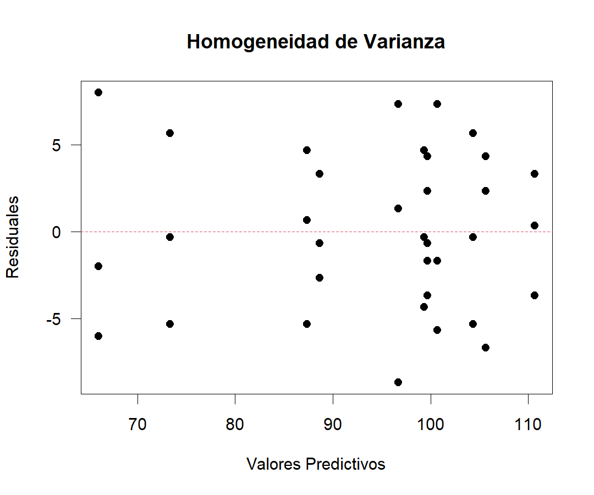
bartlett.test(fit$residuals,datos$profundidad)##
## Bartlett test of homogeneity of variances
##
## data: fit$residuals and datos$profundidad
## Bartlett's K-squared = 1.2548, df = 3, p-value = 0.7399bartlett.test(fit$residuals,datos$velocidad)##
## Bartlett test of homogeneity of variances
##
## data: fit$residuals and datos$velocidad
## Bartlett's K-squared = 1.4598, df = 2, p-value = 0.482De acuerdo a los resultados no existe diferencias de varianza entre los tratamientos y entre los bloques, es decir, hay homcedasticidad u homogeneidad de varianzas.
# Supuestos globales
plot(fit,pch=19,las=1)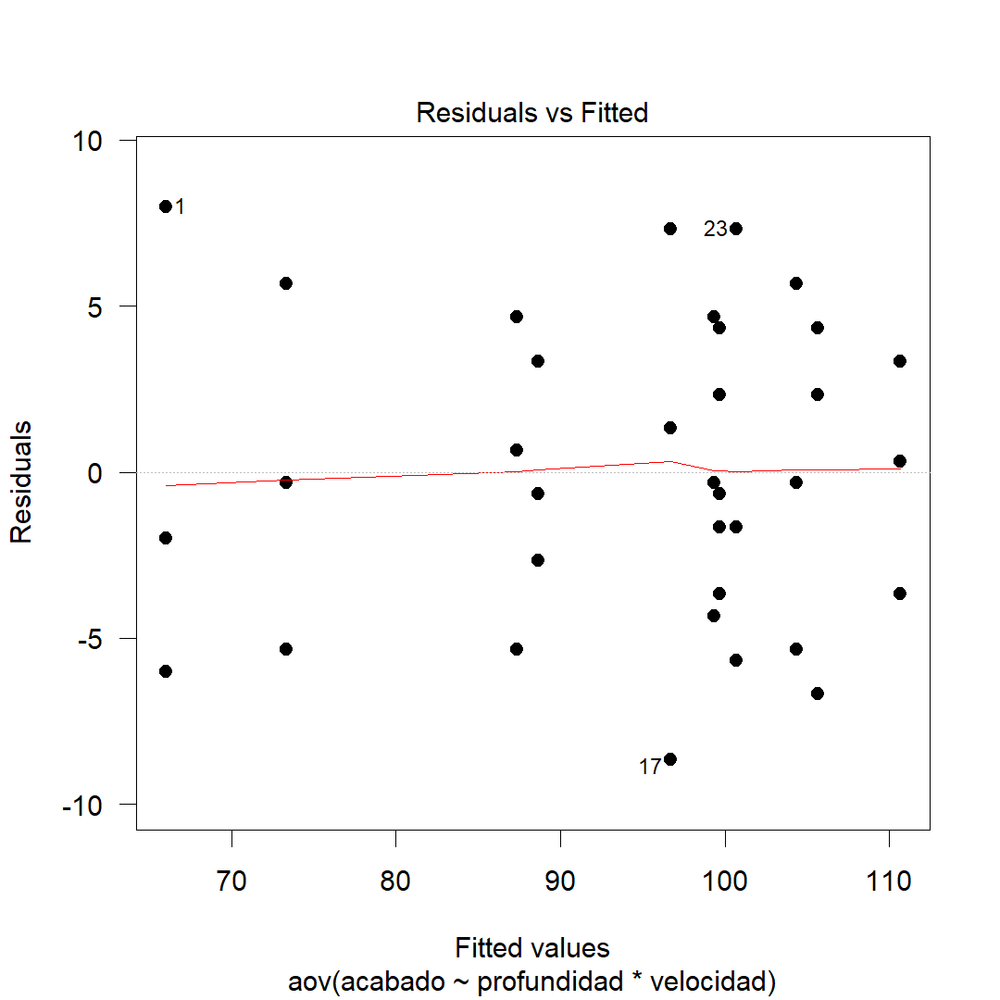 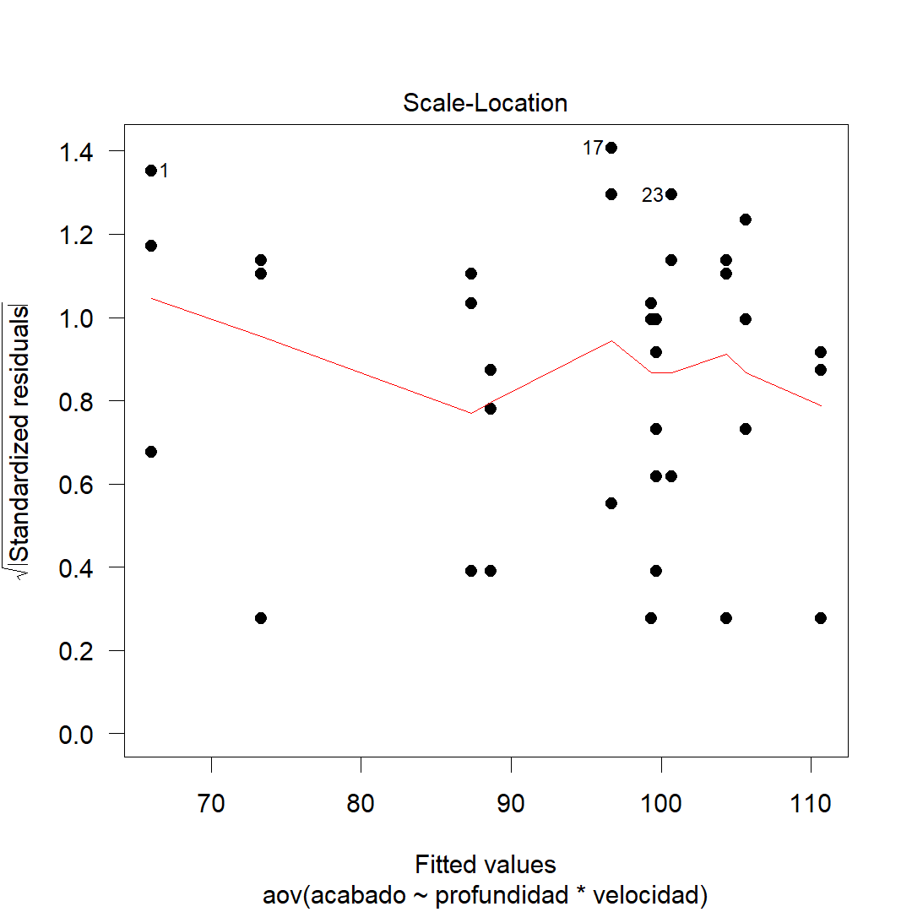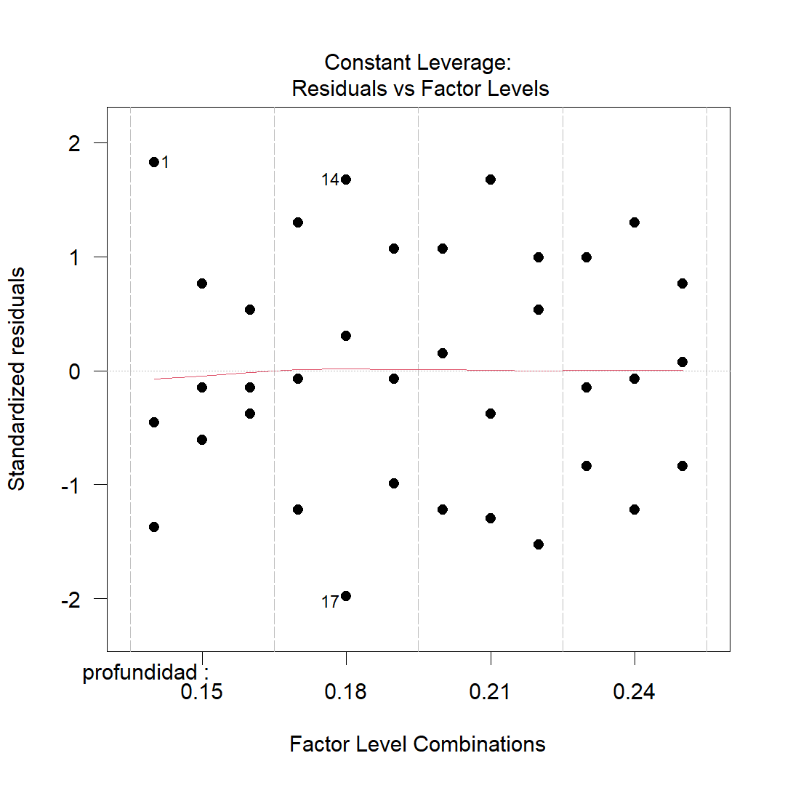
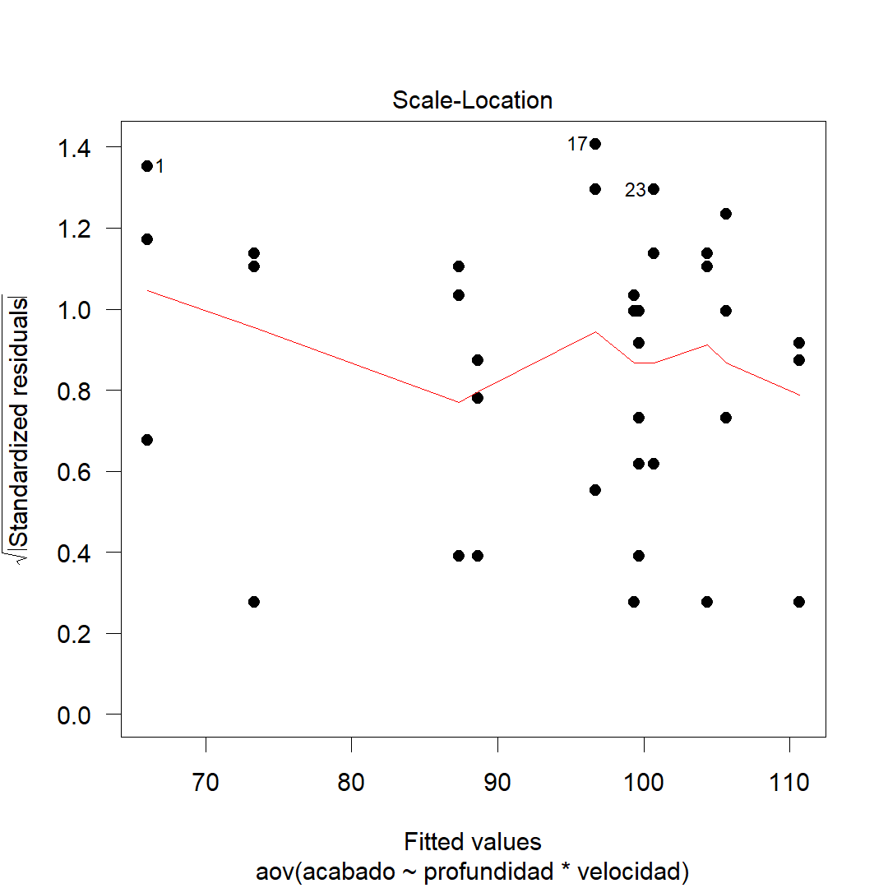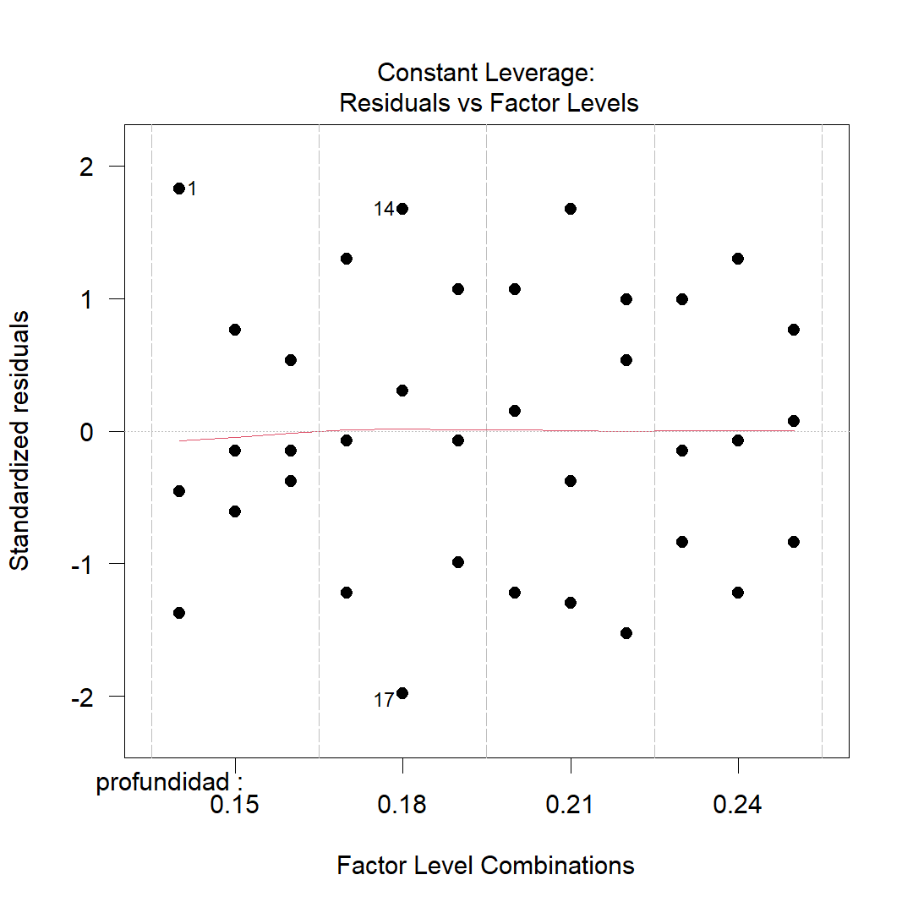
Finalmente, como los supuestos del modelo se cumplen, entonces podemos buscar cuáles son los tratamientos más significativos sobre los acabados del metal mediante las pruebas post-hoc.
#### Pruebas post-hoc ####
lsd <- LSD.test(y = fit,trt = "profundidad",console = T)##
## Study: fit ~ "profundidad"
##
## LSD t Test for acabado
##
## Mean Square Error: 28.72222
##
## profundidad, means and individual ( 95 %) CI
##
## acabado std r LCL UCL Min Max
## 0.15 84.77778 15.409232 9 81.09075 88.4648 60 102
## 0.18 89.77778 13.507200 9 86.09075 93.4648 68 104
## 0.21 97.88889 9.662355 9 94.20186 101.5759 82 110
## 0.24 104.88889 6.132790 9 101.20186 108.5759 96 114
##
## Alpha: 0.05 ; DF Error: 24
## Critical Value of t: 2.063899
##
## least Significant Difference: 5.214241
##
## Treatments with the same letter are not significantly different.
##
## acabado groups
## 0.24 104.88889 a
## 0.21 97.88889 b
## 0.18 89.77778 c
## 0.15 84.77778 cplot(lsd,las=1);grid()
LSD.test(y = fit,trt = "profundidad",console = T,group = F)##
## Study: fit ~ "profundidad"
##
## LSD t Test for acabado
##
## Mean Square Error: 28.72222
##
## profundidad, means and individual ( 95 %) CI
##
## acabado std r LCL UCL Min Max
## 0.15 84.77778 15.409232 9 81.09075 88.4648 60 102
## 0.18 89.77778 13.507200 9 86.09075 93.4648 68 104
## 0.21 97.88889 9.662355 9 94.20186 101.5759 82 110
## 0.24 104.88889 6.132790 9 101.20186 108.5759 96 114
##
## Alpha: 0.05 ; DF Error: 24
## Critical Value of t: 2.063899
##
## Comparison between treatments means
##
## difference pvalue signif. LCL UCL
## 0.15 - 0.18 -5.000000 0.0594 . -10.21424 0.2142411
## 0.15 - 0.21 -13.111111 0.0000 *** -18.32535 -7.8968700
## 0.15 - 0.24 -20.111111 0.0000 *** -25.32535 -14.8968700
## 0.18 - 0.21 -8.111111 0.0037 ** -13.32535 -2.8968700
## 0.18 - 0.24 -15.111111 0.0000 *** -20.32535 -9.8968700
## 0.21 - 0.24 -7.000000 0.0106 * -12.21424 -1.7857589lsd <- LSD.test(y = fit,trt = "velocidad",console = T)##
## Study: fit ~ "velocidad"
##
## LSD t Test for acabado
##
## Mean Square Error: 28.72222
##
## velocidad, means and individual ( 95 %) CI
##
## acabado std r LCL UCL Min Max
## 0.2 81.58333 14.336592 12 78.39028 84.77639 60 104
## 0.25 97.58333 8.005207 12 94.39028 100.77639 86 110
## 0.3 103.83333 6.072791 12 100.64028 107.02639 95 114
##
## Alpha: 0.05 ; DF Error: 24
## Critical Value of t: 2.063899
##
## least Significant Difference: 4.515665
##
## Treatments with the same letter are not significantly different.
##
## acabado groups
## 0.3 103.83333 a
## 0.25 97.58333 b
## 0.2 81.58333 cplot(lsd,las=1);grid()
LSD.test(y = fit,trt = "velocidad",console = T,group = F)##
## Study: fit ~ "velocidad"
##
## LSD t Test for acabado
##
## Mean Square Error: 28.72222
##
## velocidad, means and individual ( 95 %) CI
##
## acabado std r LCL UCL Min Max
## 0.2 81.58333 14.336592 12 78.39028 84.77639 60 104
## 0.25 97.58333 8.005207 12 94.39028 100.77639 86 110
## 0.3 103.83333 6.072791 12 100.64028 107.02639 95 114
##
## Alpha: 0.05 ; DF Error: 24
## Critical Value of t: 2.063899
##
## Comparison between treatments means
##
## difference pvalue signif. LCL UCL
## 0.2 - 0.25 -16.00 0.0000 *** -20.51567 -11.484335
## 0.2 - 0.3 -22.25 0.0000 *** -26.76567 -17.734335
## 0.25 - 0.3 -6.25 0.0087 ** -10.76567 -1.734335# Tukey HSD
(hsd <- TukeyHSD(fit))## Tukey multiple comparisons of means
## 95% family-wise confidence level
##
## Fit: aov(formula = acabado ~ profundidad * velocidad, data = datos)
##
## $profundidad
## diff lwr upr p adj
## 0.18-0.15 5.000000 -1.96935966 11.96936 0.2236177
## 0.21-0.15 13.111111 6.14175145 20.08047 0.0001427
## 0.24-0.15 20.111111 13.14175145 27.08047 0.0000002
## 0.21-0.18 8.111111 1.14175145 15.08047 0.0183181
## 0.24-0.18 15.111111 8.14175145 22.08047 0.0000202
## 0.24-0.21 7.000000 0.03064034 13.96936 0.0487217
##
## $velocidad
## diff lwr upr p adj
## 0.25-0.2 16.00 10.536111 21.46389 0.0000004
## 0.3-0.2 22.25 16.786111 27.71389 0.0000000
## 0.3-0.25 6.25 0.786111 11.71389 0.0228257
##
## $`profundidad:velocidad`
## diff lwr upr p adj
## 0.18:0.2-0.15:0.2 7.3333333 -8.4443944 23.111061 0.8621754
## 0.21:0.2-0.15:0.2 21.3333333 5.5556056 37.111061 0.0026516
## 0.24:0.2-0.15:0.2 33.6666667 17.8889389 49.444394 0.0000035
## 0.15:0.25-0.15:0.2 22.6666667 6.8889389 38.444394 0.0012723
## 0.18:0.25-0.15:0.2 30.6666667 14.8889389 46.444394 0.0000165
## 0.21:0.25-0.15:0.2 34.6666667 18.8889389 50.444394 0.0000021
## 0.24:0.25-0.15:0.2 38.3333333 22.5556056 54.111061 0.0000004
## 0.15:0.3-0.15:0.2 33.6666667 17.8889389 49.444394 0.0000035
## 0.18:0.3-0.15:0.2 33.3333333 17.5556056 49.111061 0.0000041
## 0.21:0.3-0.15:0.2 39.6666667 23.8889389 55.444394 0.0000002
## 0.24:0.3-0.15:0.2 44.6666667 28.8889389 60.444394 0.0000000
## 0.21:0.2-0.18:0.2 14.0000000 -1.7777277 29.777728 0.1156484
## 0.24:0.2-0.18:0.2 26.3333333 10.5556056 42.111061 0.0001693
## 0.15:0.25-0.18:0.2 15.3333333 -0.4443944 31.111061 0.0620975
## 0.18:0.25-0.18:0.2 23.3333333 7.5556056 39.111061 0.0008807
## 0.21:0.25-0.18:0.2 27.3333333 11.5556056 43.111061 0.0000982
## 0.24:0.25-0.18:0.2 31.0000000 15.2222723 46.777728 0.0000139
## 0.15:0.3-0.18:0.2 26.3333333 10.5556056 42.111061 0.0001693
## 0.18:0.3-0.18:0.2 26.0000000 10.2222723 41.777728 0.0002031
## 0.21:0.3-0.18:0.2 32.3333333 16.5556056 48.111061 0.0000069
## 0.24:0.3-0.18:0.2 37.3333333 21.5556056 53.111061 0.0000006
## 0.24:0.2-0.21:0.2 12.3333333 -3.4443944 28.111061 0.2331919
## 0.15:0.25-0.21:0.2 1.3333333 -14.4443944 17.111061 1.0000000
## 0.18:0.25-0.21:0.2 9.3333333 -6.4443944 25.111061 0.6067268
## 0.21:0.25-0.21:0.2 13.3333333 -2.4443944 29.111061 0.1548689
## 0.24:0.25-0.21:0.2 17.0000000 1.2222723 32.777728 0.0270232
## 0.15:0.3-0.21:0.2 12.3333333 -3.4443944 28.111061 0.2331919
## 0.18:0.3-0.21:0.2 12.0000000 -3.7777277 27.777728 0.2649724
## 0.21:0.3-0.21:0.2 18.3333333 2.5556056 34.111061 0.0134649
## 0.24:0.3-0.21:0.2 23.3333333 7.5556056 39.111061 0.0008807
## 0.15:0.25-0.24:0.2 -11.0000000 -26.7777277 4.777728 0.3773797
## 0.18:0.25-0.24:0.2 -3.0000000 -18.7777277 12.777728 0.9998762
## 0.21:0.25-0.24:0.2 1.0000000 -14.7777277 16.777728 1.0000000
## 0.24:0.25-0.24:0.2 4.6666667 -11.1110611 20.444394 0.9935407
## 0.15:0.3-0.24:0.2 0.0000000 -15.7777277 15.777728 1.0000000
## 0.18:0.3-0.24:0.2 -0.3333333 -16.1110611 15.444394 1.0000000
## 0.21:0.3-0.24:0.2 6.0000000 -9.7777277 21.777728 0.9585056
## 0.24:0.3-0.24:0.2 11.0000000 -4.7777277 26.777728 0.3773797
## 0.18:0.25-0.15:0.25 8.0000000 -7.7777277 23.777728 0.7881462
## 0.21:0.25-0.15:0.25 12.0000000 -3.7777277 27.777728 0.2649724
## 0.24:0.25-0.15:0.25 15.6666667 -0.1110611 31.444394 0.0528028
## 0.15:0.3-0.15:0.25 11.0000000 -4.7777277 26.777728 0.3773797
## 0.18:0.3-0.15:0.25 10.6666667 -5.1110611 26.444394 0.4200394
## 0.21:0.3-0.15:0.25 17.0000000 1.2222723 32.777728 0.0270232
## 0.24:0.3-0.15:0.25 22.0000000 6.2222723 37.777728 0.0018375
## 0.21:0.25-0.18:0.25 4.0000000 -11.7777277 19.777728 0.9982365
## 0.24:0.25-0.18:0.25 7.6666667 -8.1110611 23.444394 0.8270901
## 0.15:0.3-0.18:0.25 3.0000000 -12.7777277 18.777728 0.9998762
## 0.18:0.3-0.18:0.25 2.6666667 -13.1110611 18.444394 0.9999609
## 0.21:0.3-0.18:0.25 9.0000000 -6.7777277 24.777728 0.6544316
## 0.24:0.3-0.18:0.25 14.0000000 -1.7777277 29.777728 0.1156484
## 0.24:0.25-0.21:0.25 3.6666667 -12.1110611 19.444394 0.9991877
## 0.15:0.3-0.21:0.25 -1.0000000 -16.7777277 14.777728 1.0000000
## 0.18:0.3-0.21:0.25 -1.3333333 -17.1110611 14.444394 1.0000000
## 0.21:0.3-0.21:0.25 5.0000000 -10.7777277 20.777728 0.9888577
## 0.24:0.3-0.21:0.25 10.0000000 -5.7777277 25.777728 0.5112272
## 0.15:0.3-0.24:0.25 -4.6666667 -20.4443944 11.111061 0.9935407
## 0.18:0.3-0.24:0.25 -5.0000000 -20.7777277 10.777728 0.9888577
## 0.21:0.3-0.24:0.25 1.3333333 -14.4443944 17.111061 1.0000000
## 0.24:0.3-0.24:0.25 6.3333333 -9.4443944 22.111061 0.9410768
## 0.18:0.3-0.15:0.3 -0.3333333 -16.1110611 15.444394 1.0000000
## 0.21:0.3-0.15:0.3 6.0000000 -9.7777277 21.777728 0.9585056
## 0.24:0.3-0.15:0.3 11.0000000 -4.7777277 26.777728 0.3773797
## 0.21:0.3-0.18:0.3 6.3333333 -9.4443944 22.111061 0.9410768
## 0.24:0.3-0.18:0.3 11.3333333 -4.4443944 27.111061 0.3371703
## 0.24:0.3-0.21:0.3 5.0000000 -10.7777277 20.777728 0.9888577plot(hsd,las=1,cex.axis=0.5) 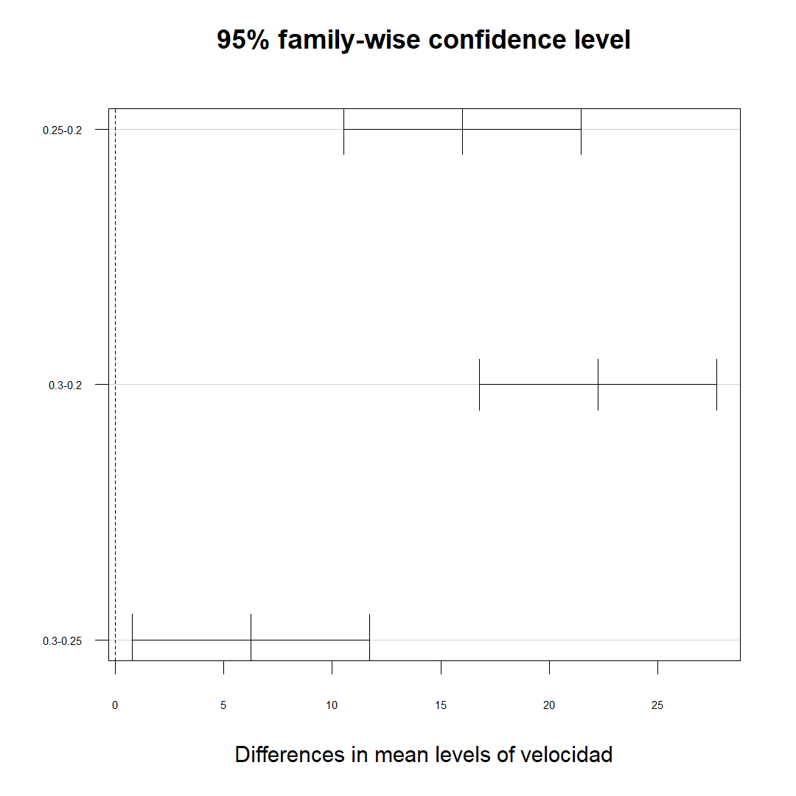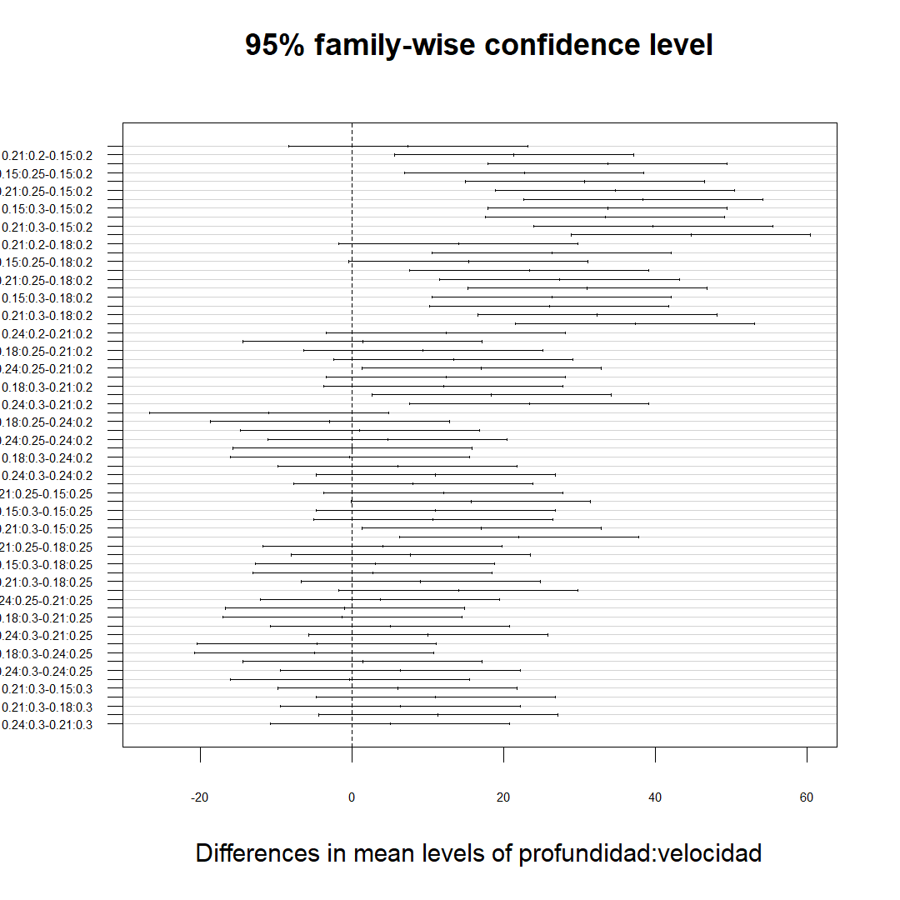
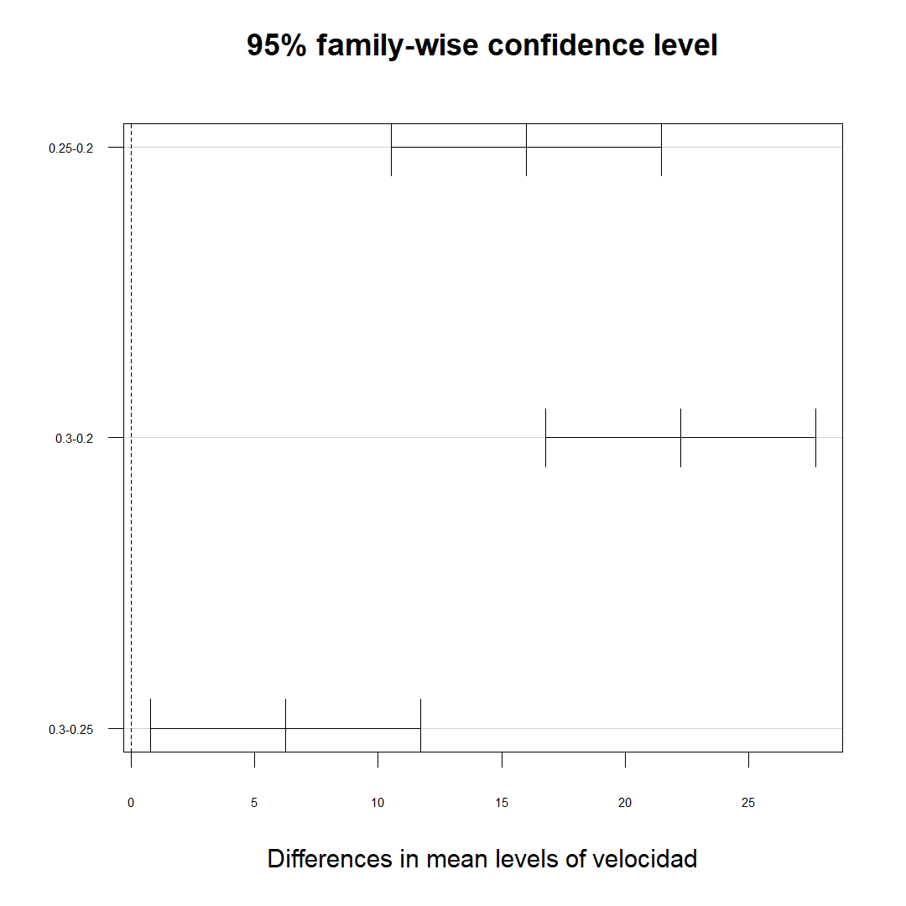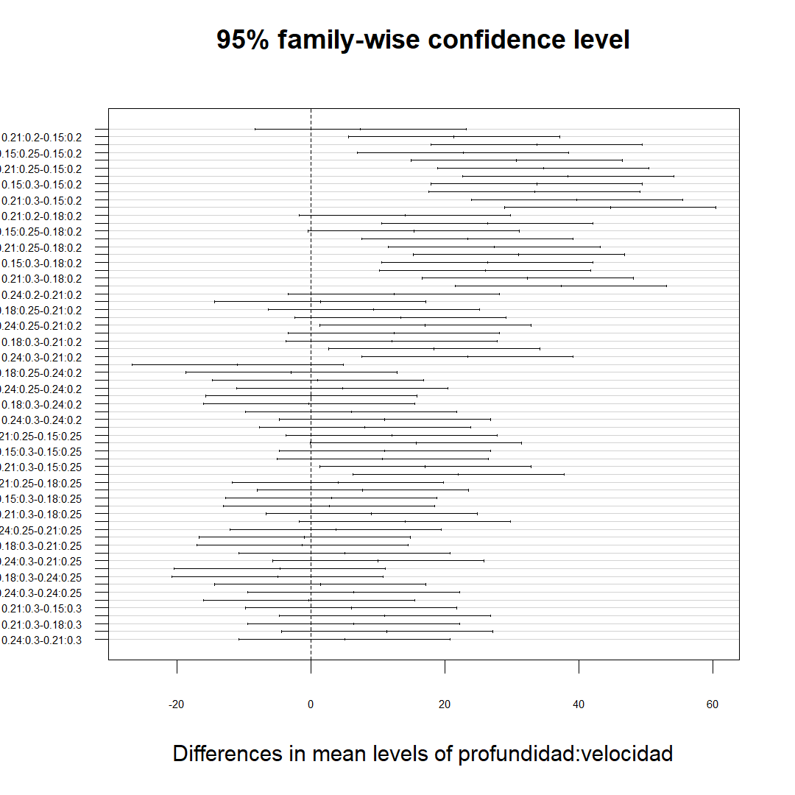
# Duncan
duncan.test(y = fit,trt = "profundidad",console = T,group = F)##
## Study: fit ~ "profundidad"
##
## Duncan's new multiple range test
## for acabado
##
## Mean Square Error: 28.72222
##
## profundidad, means
##
## acabado std r Min Max
## 0.15 84.77778 15.409232 9 60 102
## 0.18 89.77778 13.507200 9 68 104
## 0.21 97.88889 9.662355 9 82 110
## 0.24 104.88889 6.132790 9 96 114
##
## Comparison between treatments means
##
## difference pvalue signif. LCL UCL
## 0.15 - 0.18 -5.000000 0.0594 . -10.21424 0.2142407
## 0.15 - 0.21 -13.111111 0.0000 *** -18.58763 -7.6345905
## 0.15 - 0.24 -20.111111 0.0000 *** -25.75603 -14.4661950
## 0.18 - 0.21 -8.111111 0.0037 ** -13.32535 -2.8968704
## 0.18 - 0.24 -15.111111 0.0000 *** -20.58763 -9.6345905
## 0.21 - 0.24 -7.000000 0.0106 * -12.21424 -1.7857593duncan.test(y = fit,trt = "velocidad",console = T,group = F)##
## Study: fit ~ "velocidad"
##
## Duncan's new multiple range test
## for acabado
##
## Mean Square Error: 28.72222
##
## velocidad, means
##
## acabado std r Min Max
## 0.2 81.58333 14.336592 12 60 104
## 0.25 97.58333 8.005207 12 86 110
## 0.3 103.83333 6.072791 12 95 114
##
## Comparison between treatments means
##
## difference pvalue signif. LCL UCL
## 0.2 - 0.25 -16.00 0.0000 *** -20.51566 -11.484335
## 0.2 - 0.3 -22.25 0.0000 *** -26.99281 -17.507194
## 0.25 - 0.3 -6.25 0.0087 ** -10.76566 -1.734335Las comparaciones múltiples indican que los niveles bajos de ambos factores minimizan las unidades en gramos del acabado del metal, no obstante, el efecto de la interacción se observa en muchos de los cruces de las variables, para poder definir los puntos especificos donde esto pasa, es necesario revisar nuevamente los resultados de Tukey pero organizado de menor a mayor los valores-p de la prueba, además es necesario graficar las interacciones con sus respectivos intervalos de confianza.
(IM <- interactionMeans(fit))## profundidad velocidad adjusted mean std. error
## 1 0.15 0.2 66.00000 3.0942
## 2 0.18 0.2 73.33333 3.0942
## 3 0.21 0.2 87.33333 3.0942
## 4 0.24 0.2 99.66667 3.0942
## 5 0.15 0.25 88.66667 3.0942
## 6 0.18 0.25 96.66667 3.0942
## 7 0.21 0.25 100.66667 3.0942
## 8 0.24 0.25 104.33333 3.0942
## 9 0.15 0.3 99.66667 3.0942
## 10 0.18 0.3 99.33333 3.0942
## 11 0.21 0.3 105.66667 3.0942
## 12 0.24 0.3 110.66667 3.0942plot(IM)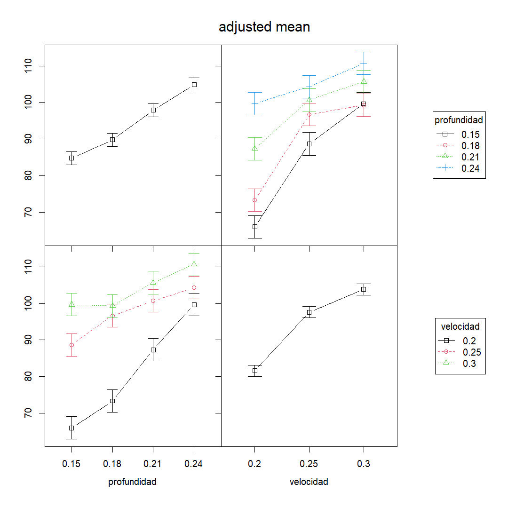
Ejemplo 2
Los siguientes datos corresponden a diseño \(3 \times 3\) con tres réplicas. Interesa investigar el efecto de ambos factores sobre \(Y\), para encontrar las condiciones adecuadas para maximizar.
| \(A\) | \(B\) | ||
|---|---|---|---|
| \(B_1\) | \(B_2\) | \(B_3\) | |
| \(A_1\) | 10 6 14 | 3 5 1 | 1 2 1 |
| \(A_2\) | 60 73 79 | 88 70 76 | 71 71 69 |
| \(A_3\) | 44 35 28 | 38 22 26 | 29 20 22 |
El modelo a evaluar es:
\[Y_{ijk}=\mu + \alpha_i + \beta_j + (\alpha\beta)_{ij}+\varepsilon_{ijk}\]
Un modelo factorial de dos factores cada uno con tres niveles, se plantea dentro del modelo la posibilidad de encontrar interacción entre los factores. Utilizando R el análisis estadístico de este diseño experimental es sencillo. Los pasos a seguir son los siguientes:
- Cargar/Construir la base de datos con la información de interés.
- Realizar un análisis descriptivo de la información.
- Ajustar el modelo a través del ANOVA.
- Validar los supuestos del modelo.
- Realizar las pruebas post-hoc.
Necesitamos las siguientes librerías.
# Para gráficos con estilo
require(ggplot2)
# Para manejar bases de datos
require(dplyr)
# Para construir los qq-plots
require(car)
# Para las pruebas de normalidad
require(nortest)
# Para evaluar las interacciones
require(phia)
# Para las pruebas post-hoc
require(agricolae)
require(multcomp)El primer paso es cargar o construir la base de datos, esto puede hacerse en excel y luego importarlas a R o se puede construir la base de datos de la siguiente forma:
datos <- data.frame(Y=c(10,6,14,3,5,1,1,2,1,
60,73,79,88,70,76,71,71,69,
44,35,28,38,22,26,29,20,22),
A=c(rep("A1",9),rep("A2",9),rep("A3",9)),
B=rep(rep(c("B1","B2","B3"),each=3),3),
stringsAsFactors = T)
# verificar la tabla de datos
str(datos)## 'data.frame': 27 obs. of 3 variables:
## $ Y: num 10 6 14 3 5 1 1 2 1 60 ...
## $ A: Factor w/ 3 levels "A1","A2","A3": 1 1 1 1 1 1 1 1 1 2 ...
## $ B: Factor w/ 3 levels "B1","B2","B3": 1 1 1 2 2 2 3 3 3 1 ...Los análisis descriptivos sirven para evaluar visualmente si existe un posible efecto del tratamiento en la variable respuesta, los candidatos a para esto son los BoxPlot ya que se presentan réplicas, además es necesario evaluar el efecto medio, entonces con gráficos de punto y línea y de interacción se realiza el análisis exploratorio.
# Box plot
ggplot(datos,aes(y=Y,x=A,fill=A))+
geom_boxplot()+theme_bw()+ggtitle("Factor A")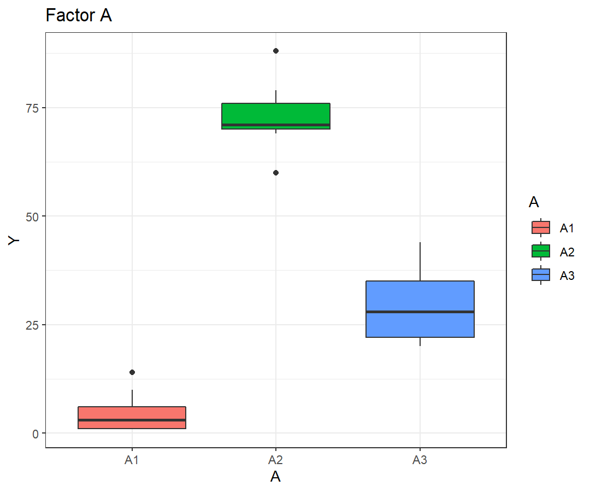
ggplot(datos,aes(y=Y,x=B,fill=B))+
geom_boxplot()+theme_bw()+ggtitle("Factor B")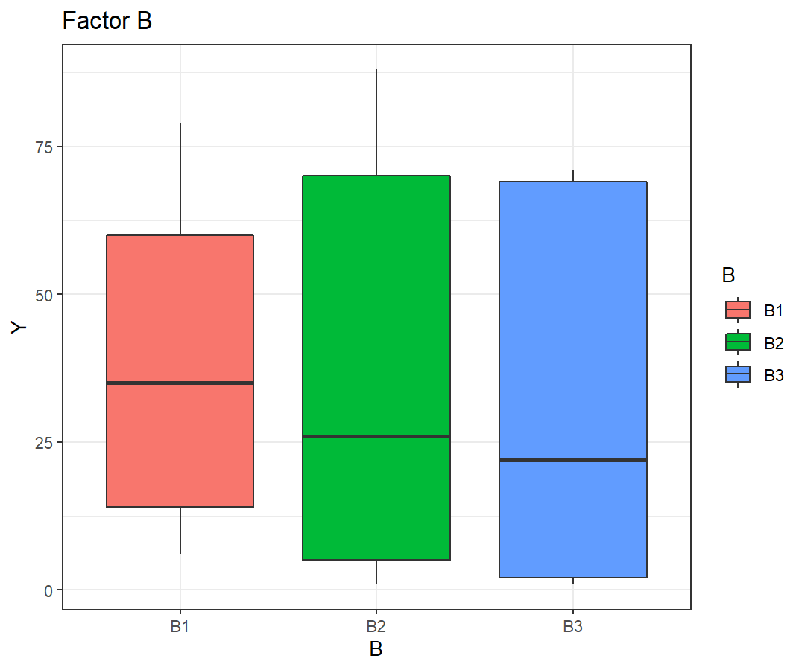
# Interacción con Base
with(datos,
interaction.plot(A,B,Y,
las=1,type = "b",pch=rep(19,3),col = 1:3,
main="Gráfico de Interacción AB"))
grid()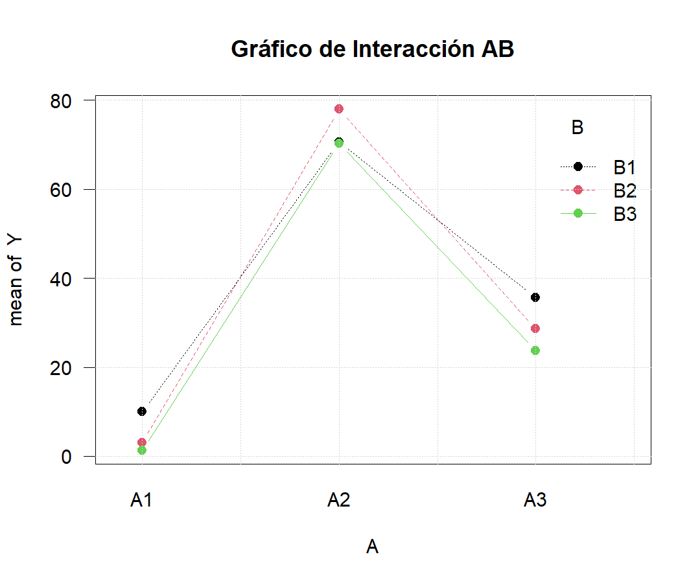
with(datos,
interaction.plot(B,A,Y,
las=1,type = "b",pch=rep(19,3),col = 1:3,
main="Gráfico de Interacción BA"))
grid()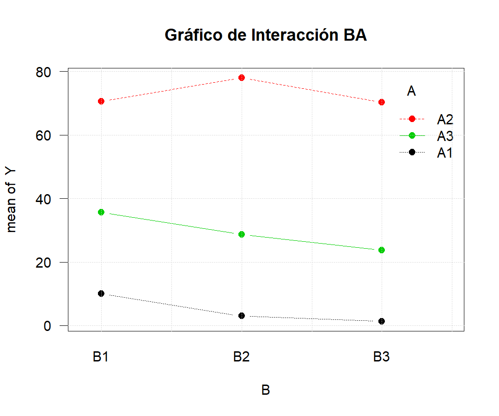
# Interacción con ggplot
Inter <- datos %>% group_by(A,B) %>%
summarise(Ym = mean(Y))
ggplot(Inter,aes(x=A,y=Ym,
group=B,colour=B))+
geom_point(size=2)+geom_line(lwd=1)+
ggtitle("Gráfico de Interacción AB")+theme_bw()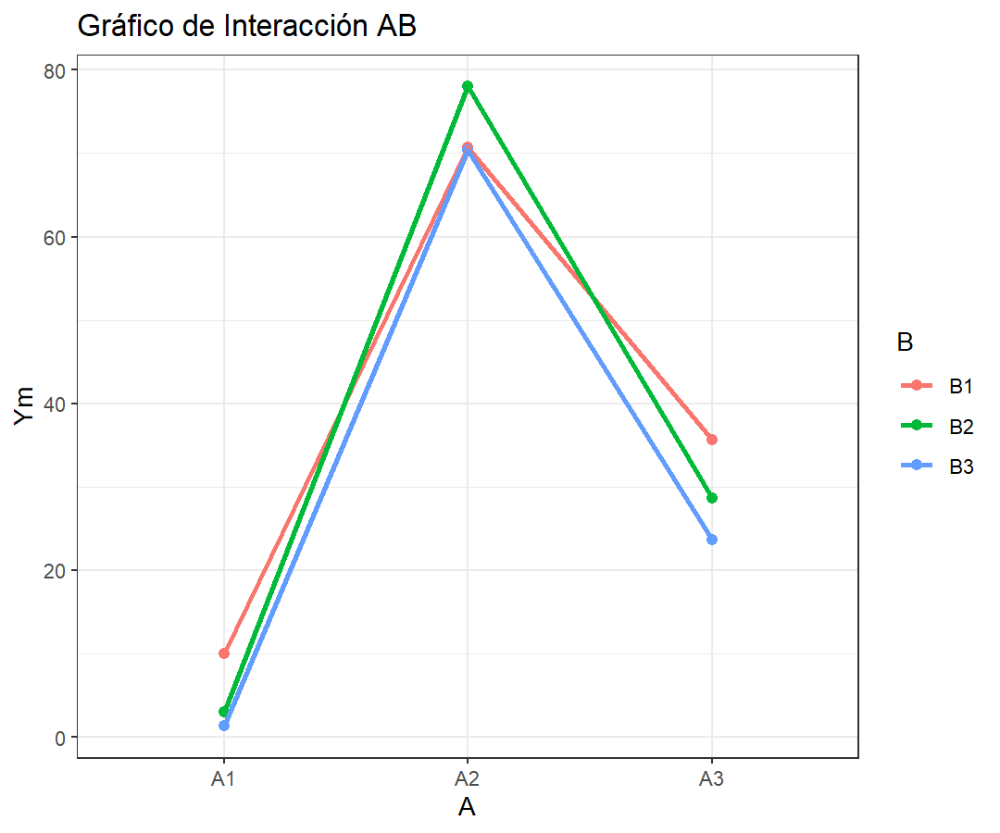
ggplot(Inter,aes(x=B,y=Ym,
group=A,colour=A))+
geom_point(size=2)+geom_line(lwd=1)+
ggtitle("Gráfico de Interacción BA")+theme_bw()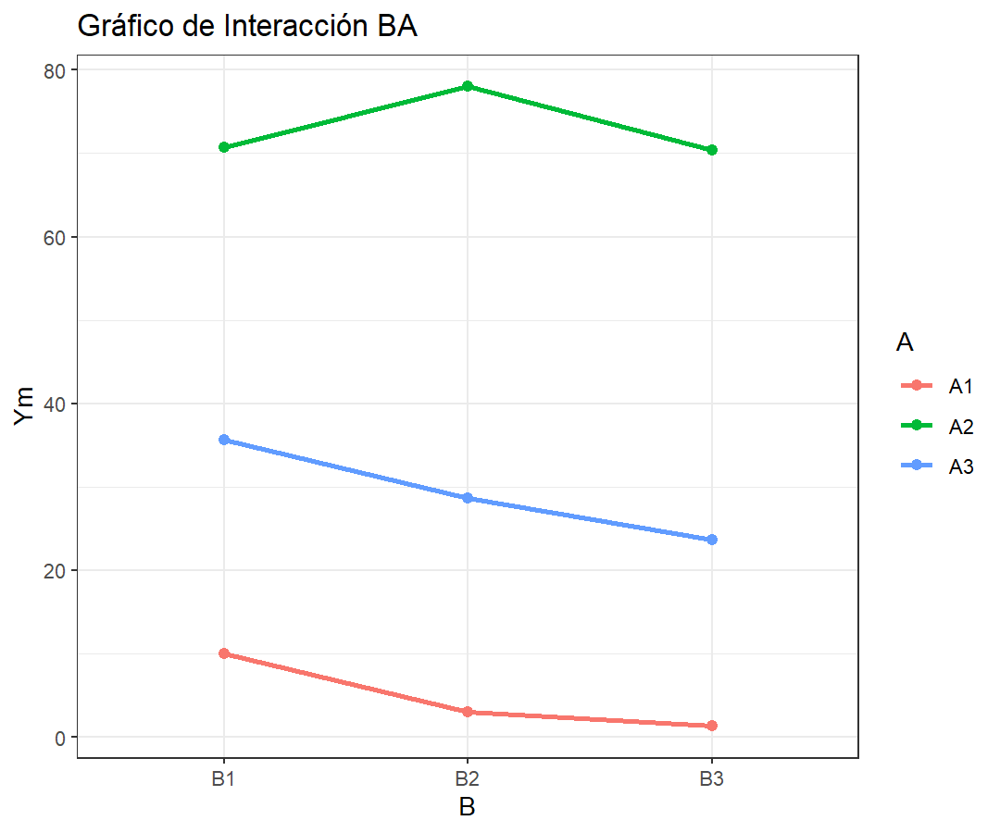
De acuerdo con los gráficos, aparentemente no hay interacción entre los factores debido a que no se cruzan los niveles entre ellos, por otra parte en el factor \(A\) el nivel \(A_1\) parece ser sel que maximiza la respuesta, y el nivel \(B_1\) hace lo mismo en el factor \(B\).
El cambio que muestran los niveles del factor \(A\) sugiere que existe un efecto curvatura, con el siguiente gráfico se puede realizar una aproximación.
# Efecto Curvatura
ggplot(datos,aes(x=as.numeric(A),y=Y,
group=B,colour=B))+
geom_point(data=Inter,aes(x=as.numeric(A),y=Ym),size=2)+
geom_smooth(se=F,method = "loess")+
ggtitle("Gráfico de Interacción AB\nEfecto Curvatura")+theme_bw()
ggplot(datos,aes(x=as.numeric(B),y=Y,
group=A,colour=A))+
geom_point(data=Inter,aes(x=as.numeric(B),y=Ym),size=2)+
geom_smooth(se=F,method = "loess")+
ggtitle("Gráfico de Interacción BA\nEfecto Curvatura")+theme_bw()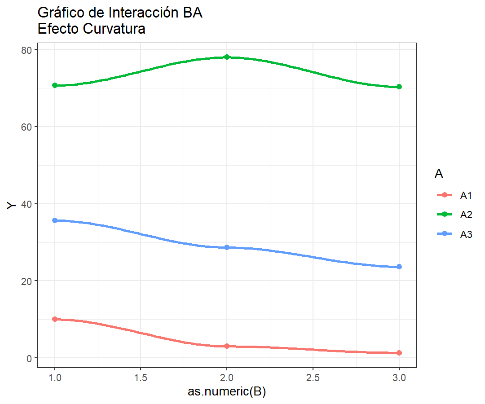
Luego se construye el modelo con el comando aov dando como argumentos la fórmula, después se ejecuta el comando anova para construir la tabla e interpretar.
# Anova
fit <- aov(Y~A*B,data = datos)
anova(fit)## Analysis of Variance Table
##
## Response: Y
## Df Sum Sq Mean Sq F value Pr(>F)
## A 2 21492.1 10746.0 271.6695 3.584e-14 ***
## B 2 230.3 115.1 2.9110 0.08028 .
## A:B 4 227.3 56.8 1.4363 0.26263
## Residuals 18 712.0 39.6
## ---
## Signif. codes: 0 '***' 0.001 '**' 0.01 '*' 0.05 '.' 0.1 ' ' 1De acuerdo con el ANOVA el factor \(A\) es significativo en el modelo, la interacción no lo es y el factor \(B\) podría ser significativo. Para elegir el modelo definitivo es necesario extraer paso a paso los efectos no significativos partiendo desde aquel que tiene el valor-p más alto, volver a evaluar el ANOVA y repetir el procedimiento si es necesario.
# Anova 2
fit <- update(fit,.~.-A:B)
anova(fit)## Analysis of Variance Table
##
## Response: Y
## Df Sum Sq Mean Sq F value Pr(>F)
## A 2 21492.1 10746.0 251.7013 6.938e-16 ***
## B 2 230.3 115.1 2.6971 0.08962 .
## Residuals 22 939.3 42.7
## ---
## Signif. codes: 0 '***' 0.001 '**' 0.01 '*' 0.05 '.' 0.1 ' ' 1Cuando se extrae la interacción del modelo aumentan los grados de libertad para el error, además,este modelo de efectos fijos muestra que el factor \(B\) no es significativo para explicar la respuesta \(Y\), por lo tanto, también hay que extraerlo del modelo.
# Anova 3
fit <- update(fit,.~.-B)
anova(fit)## Analysis of Variance Table
##
## Response: Y
## Df Sum Sq Mean Sq F value Pr(>F)
## A 2 21492.1 10746.0 220.52 3.571e-16 ***
## Residuals 24 1169.6 48.7
## ---
## Signif. codes: 0 '***' 0.001 '**' 0.01 '*' 0.05 '.' 0.1 ' ' 1Finalmente, el modelo es significativo solo para el factor \(A\). Es necesario validar los supuestos del modelo antes de realizar las pruebas post-hoc y concluir más allá.
# normalidad
qqPlot(fit$residuals,pch=19,main="Normal Q-Q Plot",las=1)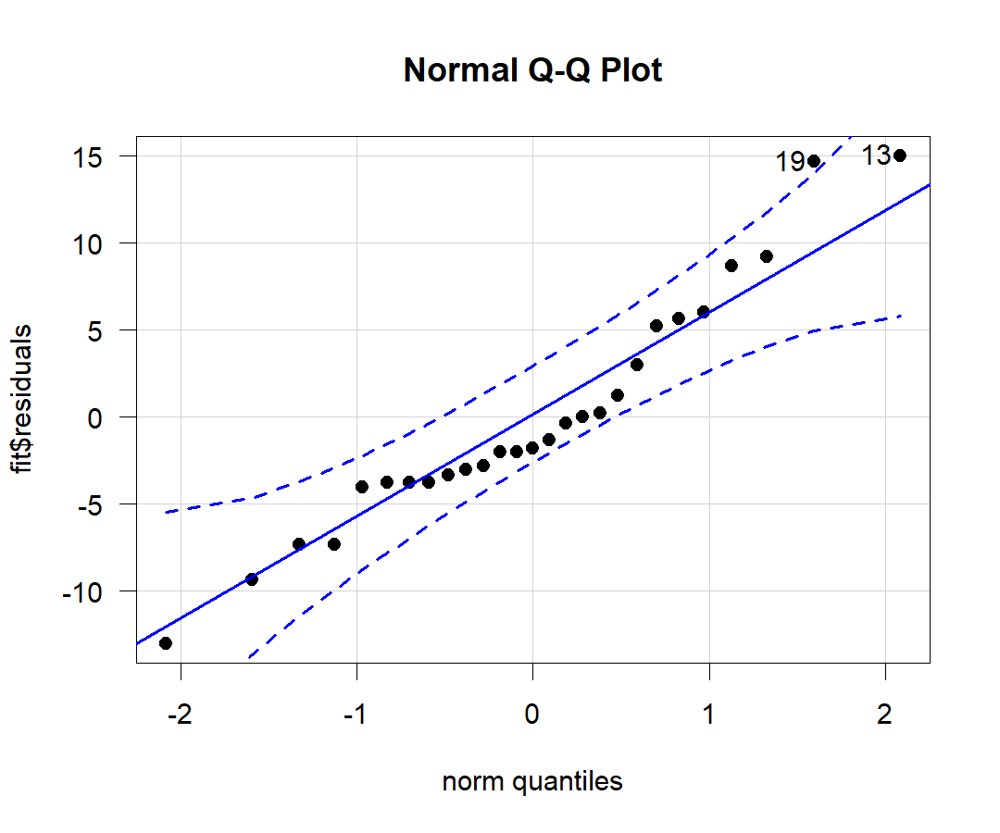
## [1] 13 19shapiro.test(fit$residuals)##
## Shapiro-Wilk normality test
##
## data: fit$residuals
## W = 0.94818, p-value = 0.1936ad.test(fit$residuals)##
## Anderson-Darling normality test
##
## data: fit$residuals
## A = 0.6392, p-value = 0.08543lillie.test(fit$residuals)##
## Lilliefors (Kolmogorov-Smirnov) normality test
##
## data: fit$residuals
## D = 0.15345, p-value = 0.1053Se cumple el supuesto de normalidad dado que no se rechaza la hipótesis nula. Como no tenemos el orden de las corridas del modelo, no es posible evaluar independencia en los residuales.
# Homocedasticidad
plot(predict(fit),fit$residuals,pch=19,las=1,
main="Homogeneidad de Varianza",
xlab="Valores Predictivos",ylab="Residuales")
abline(h=0,lty=2,col=2)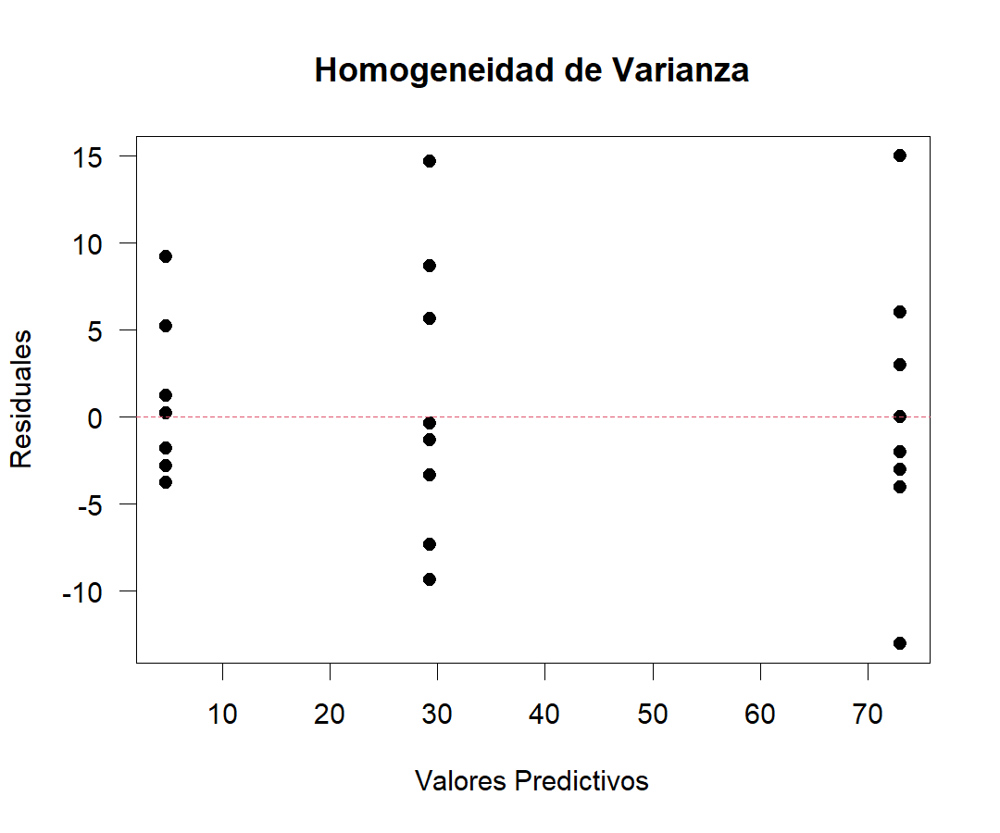
# Bartlett
bartlett.test(fit$residuals,datos$A)##
## Bartlett test of homogeneity of variances
##
## data: fit$residuals and datos$A
## Bartlett's K-squared = 2.6233, df = 2, p-value = 0.2694# Levene
leveneTest(fit$residuals,datos$A)## Levene's Test for Homogeneity of Variance (center = median)
## Df F value Pr(>F)
## group 2 0.8097 0.4568
## 24De acuerdo a los resultados no existe diferencias de varianza entre los tratamientos y entre los bloques, es decir, hay homcedasticidad u homogeneidad de varianzas.
# Supuestos globales
plot(fit,pch=19,las=1)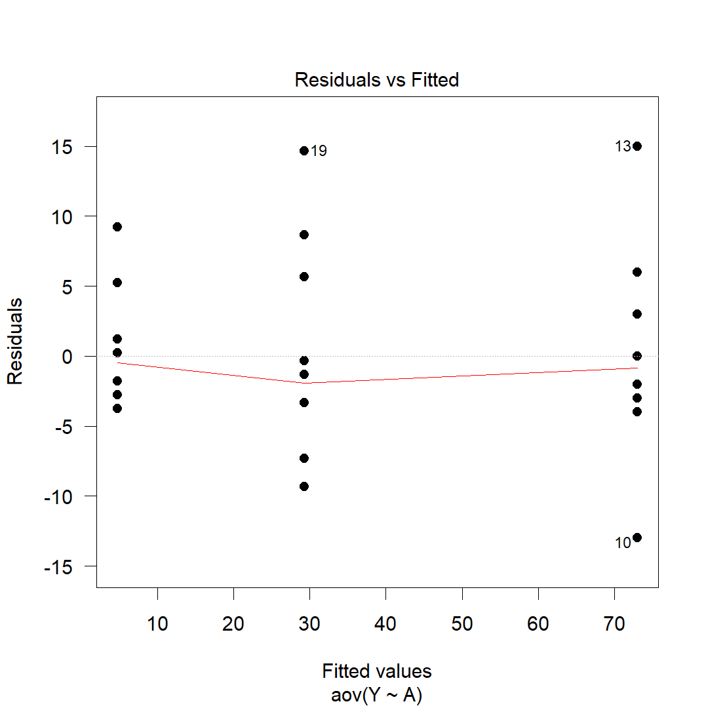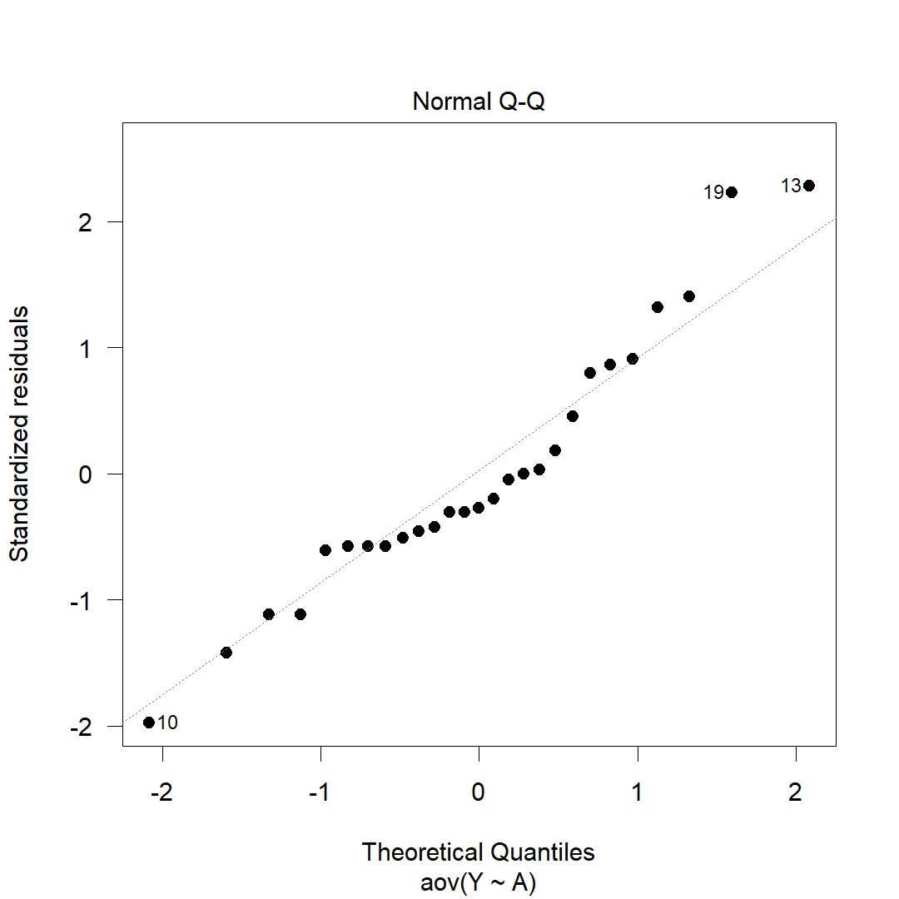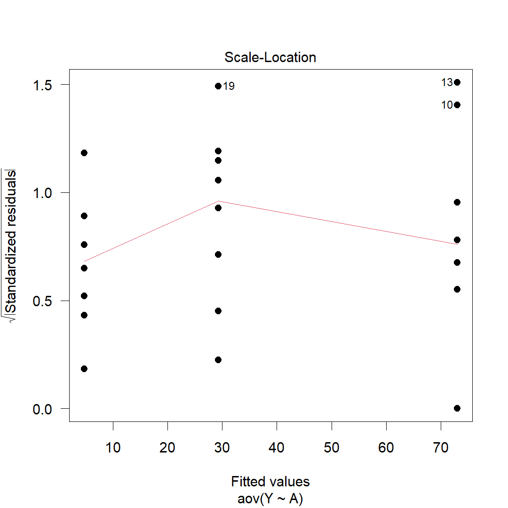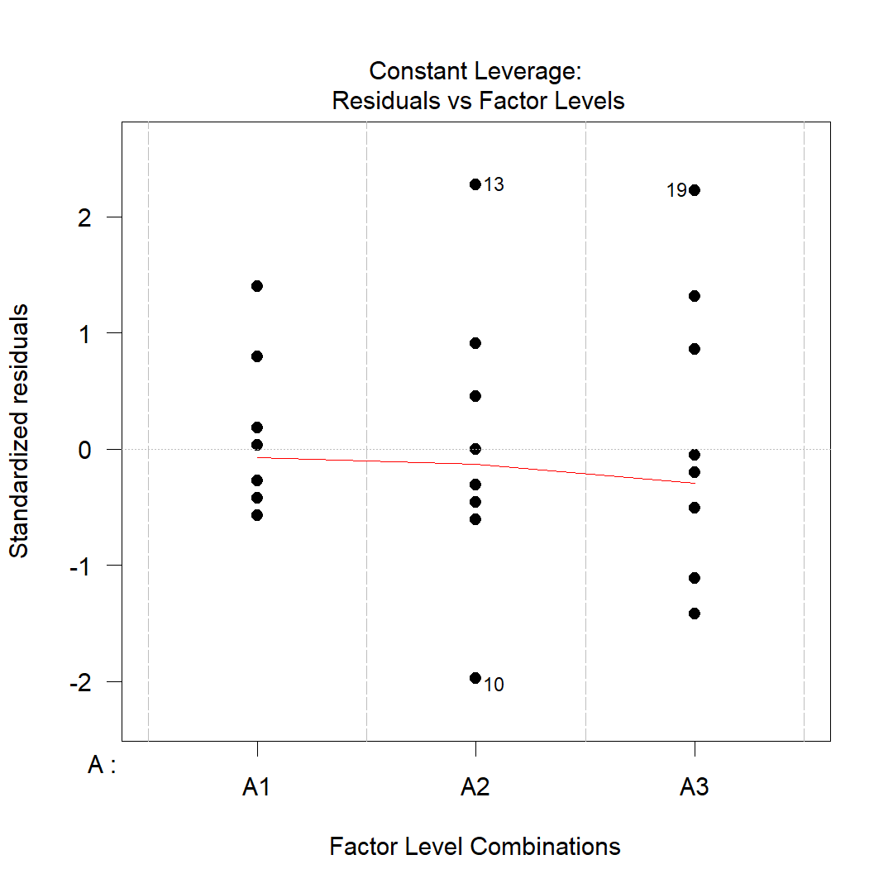
Finalmente, como los supuestos del modelo se cumplen, entonces podemos buscar cuáles son los tratamientos más significativos sobre la respuesta \(Y\) mediante las pruebas post-hoc.
#### Pruebas post-hoc ####
lsd <- LSD.test(y = fit,trt = "A",console = T)##
## Study: fit ~ "A"
##
## LSD t Test for Y
##
## Mean Square Error: 48.73148
##
## A, means and individual ( 95 %) CI
##
## Y std r LCL UCL Min Max
## A1 4.777778 4.576510 9 -0.02477229 9.580328 1 14
## A2 73.000000 7.681146 9 68.19744994 77.802550 60 88
## A3 29.333333 8.139410 9 24.53078327 34.135883 20 44
##
## Alpha: 0.05 ; DF Error: 24
## Critical Value of t: 2.063899
##
## least Significant Difference: 6.791831
##
## Treatments with the same letter are not significantly different.
##
## Y groups
## A2 73.000000 a
## A3 29.333333 b
## A1 4.777778 cplot(lsd,las=1,variation="SE");grid()
LSD.test(y = fit,trt = "A",console = T,group = F)##
## Study: fit ~ "A"
##
## LSD t Test for Y
##
## Mean Square Error: 48.73148
##
## A, means and individual ( 95 %) CI
##
## Y std r LCL UCL Min Max
## A1 4.777778 4.576510 9 -0.02477229 9.580328 1 14
## A2 73.000000 7.681146 9 68.19744994 77.802550 60 88
## A3 29.333333 8.139410 9 24.53078327 34.135883 20 44
##
## Alpha: 0.05 ; DF Error: 24
## Critical Value of t: 2.063899
##
## Comparison between treatments means
##
## difference pvalue signif. LCL UCL
## A1 - A2 -68.22222 0 *** -75.01405 -61.43039
## A1 - A3 -24.55556 0 *** -31.34739 -17.76372
## A2 - A3 43.66667 0 *** 36.87484 50.45850# Tukey HSD
(hsd <- TukeyHSD(fit))## Tukey multiple comparisons of means
## 95% family-wise confidence level
##
## Fit: aov(formula = Y ~ A, data = datos)
##
## $A
## diff lwr upr p adj
## A2-A1 68.22222 60.00421 76.44024 0e+00
## A3-A1 24.55556 16.33754 32.77357 3e-07
## A3-A2 -43.66667 -51.88468 -35.44865 0e+00plot(hsd,las=1)
# Duncan
duncan.test(y = fit,trt = "A",console = T,group = F)##
## Study: fit ~ "A"
##
## Duncan's new multiple range test
## for Y
##
## Mean Square Error: 48.73148
##
## A, means
##
## Y std r Min Max
## A1 4.777778 4.576510 9 1 14
## A2 73.000000 7.681146 9 60 88
## A3 29.333333 8.139410 9 20 44
##
## Comparison between treatments means
##
## difference pvalue signif. LCL UCL
## A1 - A2 -68.22222 0 *** -75.35569 -61.08876
## A1 - A3 -24.55556 0 *** -31.34739 -17.76372
## A2 - A3 43.66667 0 *** 36.87484 50.45850Las comparaciones múltiples indican que el nivel \(A_2\) es el que maximiza la respuesta, además existen diferencias significativas entre todos los tratamientos del factor.